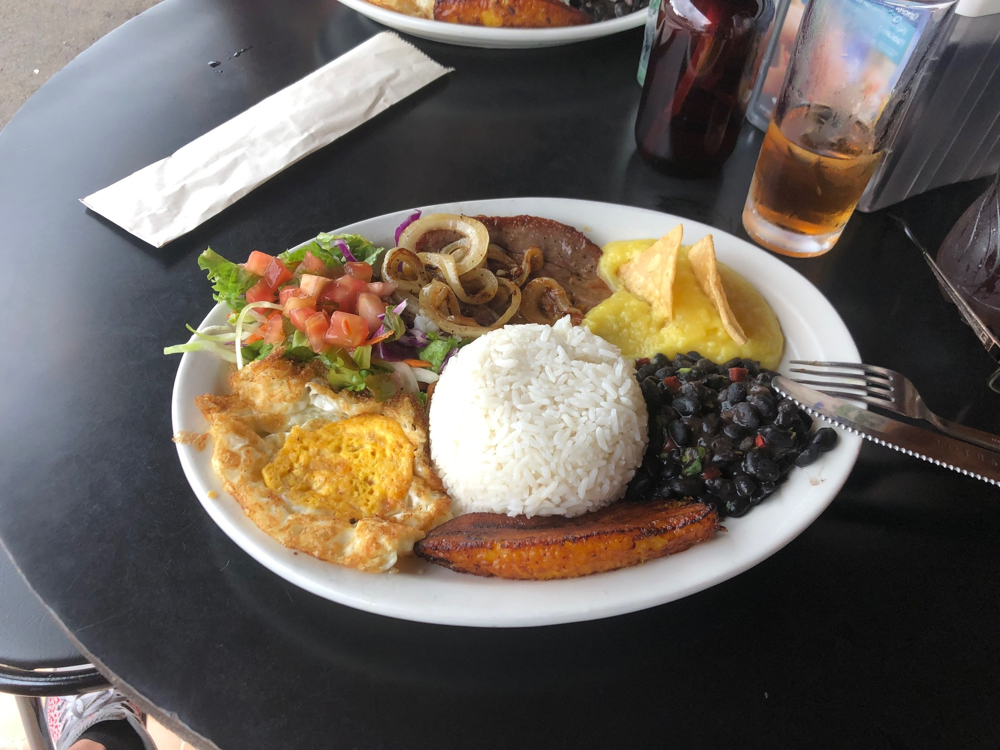
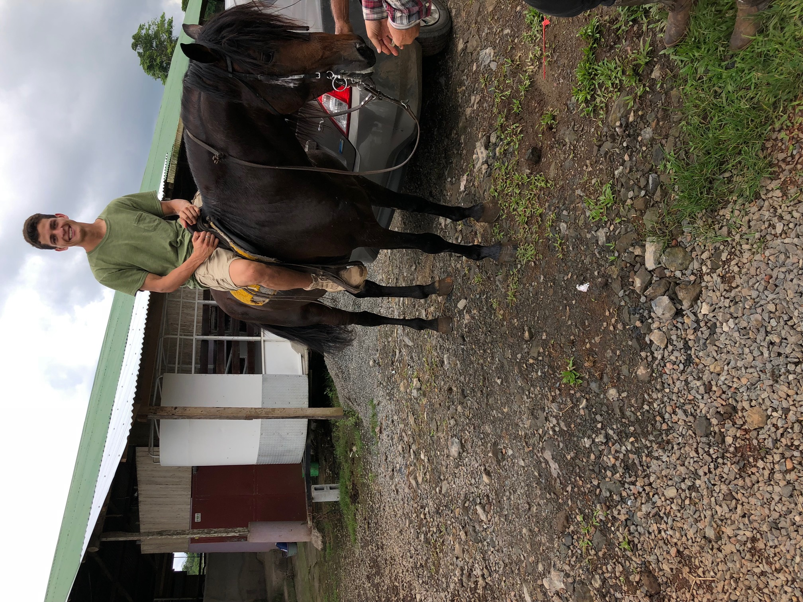
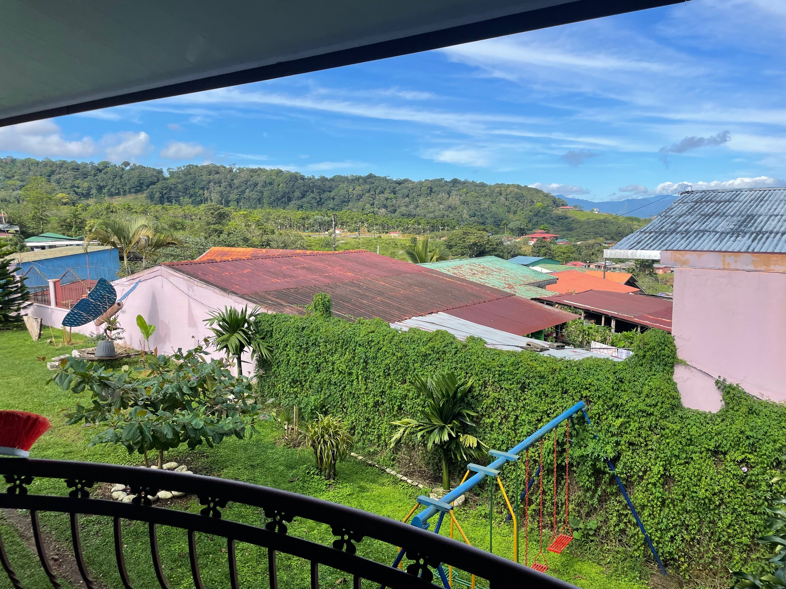
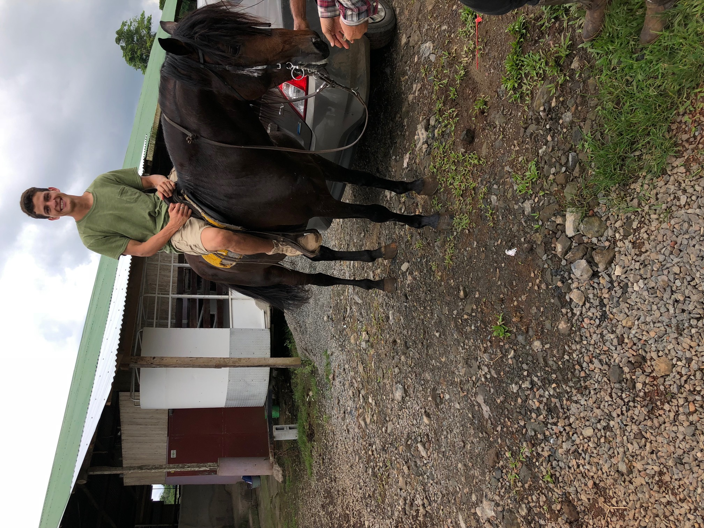
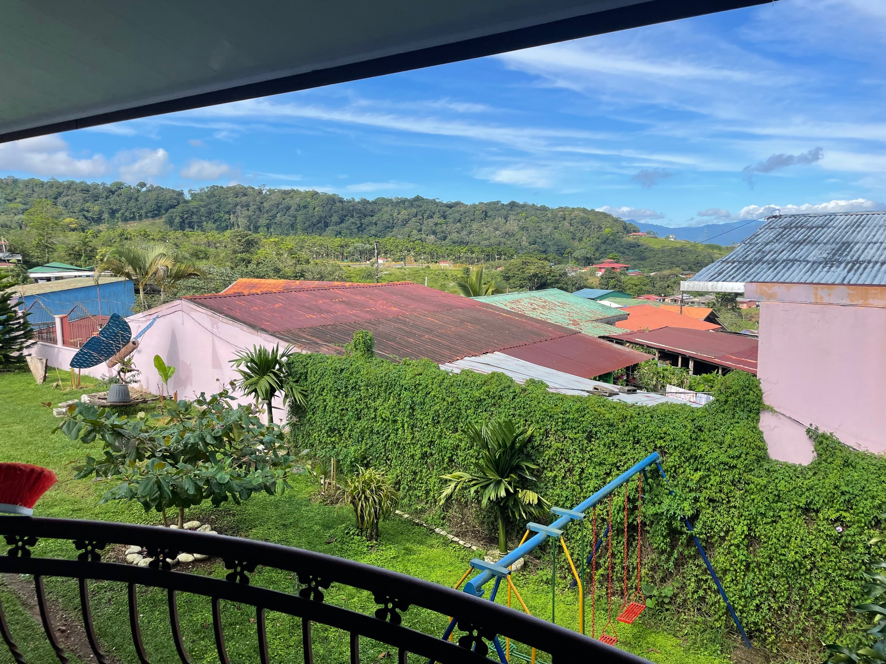

My trip starts by arriving at Costa Rica's busy capital, San Jose. The pictures below our aerial views from the airplane and photos walking around the capital.


However, after an hour, I leave San Jose as I have been to Costa Rica many times and the capital is full of bums and drug addicts.Typical big city vibes. So I always make my way to La Fortuna, the beach, and Quesada city which happens to be spelled just like my last name. It's also the city I was born in.
Below is my home in Costa Rica with me next to a very good friend of mine. I grew up here until I was 8 years old and moved to Las Vegas.

This is Rio Celeste, which means Celest River in Spanish. There is a mineral in the water which turns the water into this aqua blue. It is gorgeous and has a very beautiful waterfall. This is one of the most famous places in all of Costa Rica


One of the best plates to eat while in Costa Rica is a Casado.It is one of the most typical plates in Costa Rica and the food is so fresh.
My younger brother touching a sloth!

This is my dad in front of Arenal Volcano, near La Fortuna

In Costa Rica it is extremely prohibited to kill any wildlife. The iguana below is at a reserve where there is a lot of birds, iguanas, sloths as well as crocodiles.

This is a car that belongs to the friend who was in the picture of my house.

The rest of these pictures are from La Fortuna as well as near Quesada. Hope you like them and thank you for checking out my site.

 


